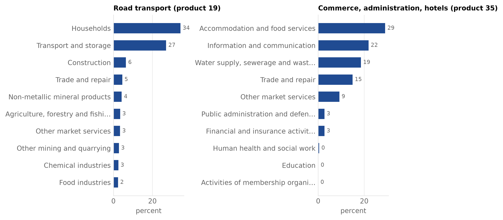
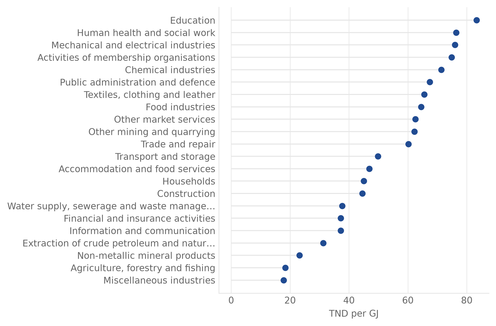
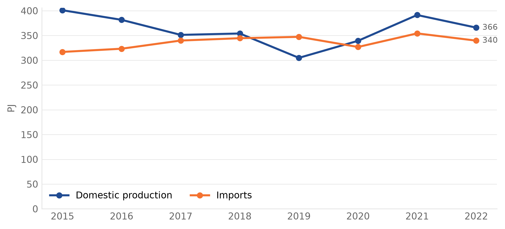
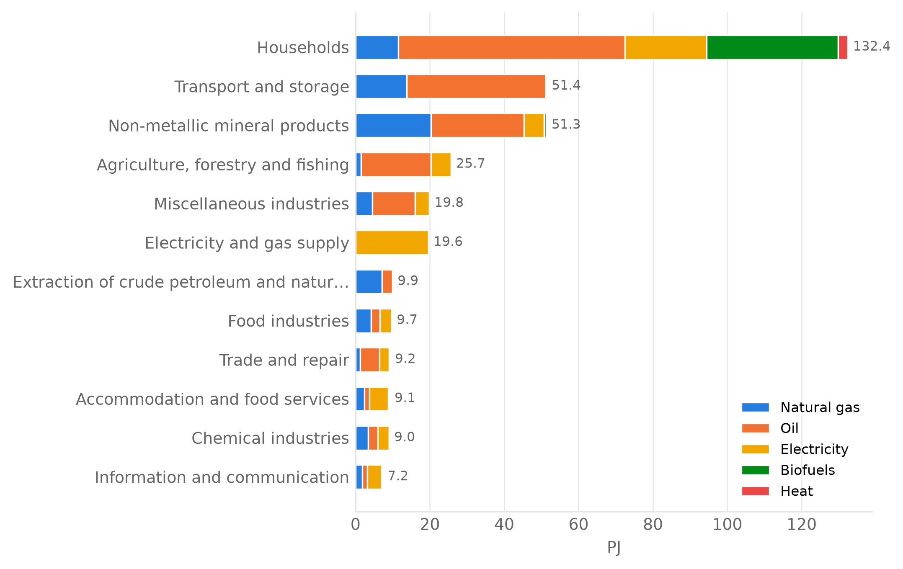
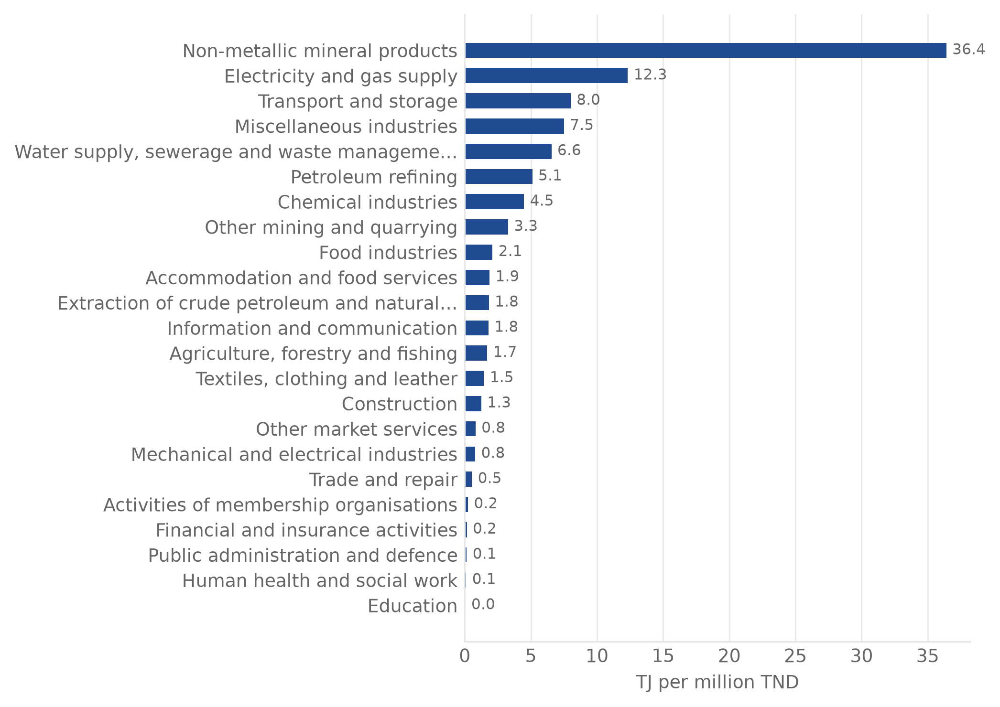
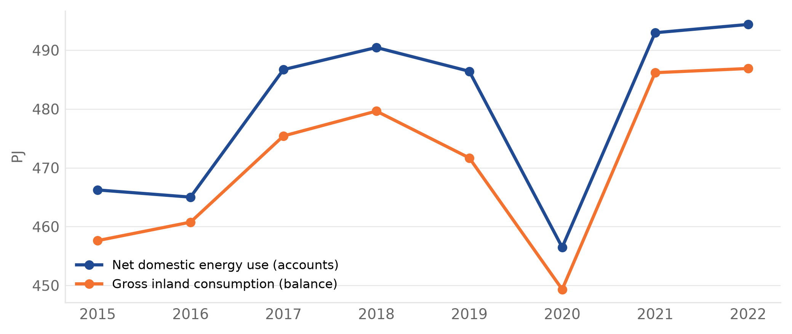

| Script | Purpose |
|---|---|
| extract/01_extract_energy_balances.py | Energy balances of ONEM in long format, with stable codes |
| extract/02_extract_crt_inventory.py | Common reporting tables of the greenhouse gas inventory |
| extract/03_extract_supply_use_tables.py | Supply and use tables of the national accounts |
| pefa/10_map_balance_to_iea_template.py | The Tunisian balance in the IEA template of the IMF tool |
| pefa/11_build_activity_keys.py | Each balance flow assigned to the industries of the national accounts |
| pefa/12_build_concordance_matrix.py | The Tunisian concordance matrix, one per year |
| pefa/13_compile_pefa_tables.py | Physical supply and use tables, checked against the IMF tool |
| pefa/14_check_pefa_and_indicators.py | Balance checks, plausibility and indicators |
| pefa/15_export_pefa.py | Excel workbooks in English, French and Arabic |
| report/30_publish_tables.py | Tables and labels for the documents and the data explorer |
Physical Energy Flow Accounts for Tunisia
Concepts, compilation methods and results, 2015 to 2022
Summary
Physical energy flow accounts (PEFA) record, in terajoules, how energy enters the Tunisian economy, which industries and households produce and use it, and how it returns to the environment. They organise the information of the national energy balance in the format of the national accounts, so that energy use can be set beside output, value added and employment, and so that the emissions accounts can rest on the same allocation. This document explains the concepts, describes each step of a reproducible compilation of the accounts for 2015 to 2022, and presents the first results.
In 2022, the economy obtained 366 petajoules (PJ) of energy products from domestic production and 340 PJ from imports. Imports covered 62% of the natural gas supply. Households were the largest end user, with 34% of energy used for energy purposes, followed by transport and storage and non-metallic mineral products. Net domestic energy use, the accounts’ headline indicator, reached 494 PJ. The compilation reproduces the IMF PEFA Converter to within 5e-13 PJ, and every allocation choice is a table that the national compilers can review and change.
1 Introduction
Energy statistics in Tunisia are rich. The Observatoire national de l’énergie et des mines (ONEM) publishes a national energy balance every year, which shows the supply of each energy product and its transformation and use by broad sector (Bouazizi, 2026). National accounts, compiled by the Institut national de la statistique (INS), describe the same economy in money terms through supply and use tables (SUT) by industry. The two systems speak different languages. The balance groups users by technical sector, such as “road transport” or “commerce, administration, hotels”, while the national accounts group them by industry, such as land transport, accommodation or public administration. The balance records what happens on the national territory, while the national accounts record what resident units do wherever they are.
Physical energy flow accounts bridge the two. They are part of the System of Environmental-Economic Accounting (SEEA), the international standard that extends the national accounts to the environment (United Nations et al., 2014; United Nations, 2019). Once energy is recorded by industry, the questions that matter for policy can be answered with consistent numbers: which industries use the most energy per dinar of value added, how much of the energy that households use goes to transport, and how changes in the structure of the economy affect energy demand.
The International Monetary Fund (IMF) has developed an Excel tool for this conversion, the PEFA Converter, which applies a concordance matrix to an energy balance in the format of the International Energy Agency (IEA) (International Monetary Fund, 2024; Pegoue, 2026). This document follows its logic step by step. The calculations are carried out by a series of Python scripts in the folder https://github.com/renatovargas/tun-pefa-aea/tree/main/scripts, listed in Table 1 in the order in which they run. Each step of the Methods section points to the entry of its script in Annex I, which explains what the script reads, does and writes. The file run_pipeline.py runs the whole series in less than half a minute, and each script stops if one of its checks fails. The emissions accounts, which reuse several of these steps, are described in a companion document.
2 Concepts
2.1 Energy in the System of Environmental-Economic Accounting
The SEEA follows energy as it crosses the boundary between the environment and the economy and as it moves within the economy. Three kinds of flows are distinguished (United Nations, 2019, paras 2.14 to 2.21). Energy from natural inputs flows from the environment into the economy, for example the energy content of crude oil when it is extracted, or the solar energy captured by a panel. Energy products circulate within the economy: they are produced, traded, transformed and used, for example natural gas, diesel or electricity. Energy residuals flow back to the environment: heat released when fuels are burnt, electricity lost in the grid, gas flared at the well head.
The accounts follow the principle of conservation of energy. Energy is neither created nor destroyed, only changed from one form to another. When natural gas is burnt in a power plant, part of its energy content becomes electricity, an energy product, and the rest is lost as heat, an energy residual. When a household uses the electricity, its energy content ends up as residual heat as well. For this reason every use of energy in the accounts is matched by a residual of the same size, and the totals of the supply and use tables are larger than the energy that the country actually consumes. Figure 1 shows these flows.
flowchart LR ENV1["Environment"] -- "natural inputs<br/>(crude oil, gas, sun, wind, biomass)" --> IND["Resident industries"] ROW1["Rest of the world"] -- "imports of<br/>energy products" --> IND IND -- "energy products" --> IND IND -- "energy products" --> HH["Households"] IND -- "exports" --> ROW2["Rest of the world"] IND -- "energy residuals<br/>(losses, heat)" --> ENV2["Environment"] HH -- "energy residuals" --> ENV2
2.2 Supply and use tables in physical units
The accounts are presented as two tables with the same rows (United Nations et al., 2014, Section 3.3). The supply table shows who provides each flow: the environment provides natural inputs, industries produce energy products and residuals, the rest of the world provides imports, and households generate residuals. The use table shows who receives each flow: industries use natural inputs and energy products, households consume energy products, the rest of the world receives exports, and the environment receives the residuals. For each row, total supply equals total use. Columns are the same economic units as in the national accounts, namely industries, households, accumulation (changes in stocks and energy kept in products such as bitumen), the rest of the world and the environment.
The rows of the IMF tool follow the Standard International Energy Product Classification (SIEC) at the level of broad product groups: coal, natural gas, oil, biofuels, waste, electricity, heat and nuclear fuels (International Monetary Fund, 2024; United Nations, 2018). The columns of the tool follow the sections of the International Standard Industrial Classification (ISIC). The Tunisian accounts in this document go one level further and use the 24 industries of the Tunisian supply and use tables, which keeps them consistent with the national accounts and allows the results to be added up to ISIC sections when international comparison requires it.
2.3 Territory and residence
An energy balance records what happens on the national territory. National accounts, and therefore energy accounts, record what resident units do, wherever they do it (Eurostat, 2014, paras 41 to 48). The difference matters mainly for international transport. Fuel that a Tunisian airline buys in Paris belongs to the Tunisian accounts but not to the Tunisian balance. Fuel that a foreign ship buys in Radès belongs to the balance as international bunkers, but not to the Tunisian accounts. The accounts reconcile the two views in a bridge table that starts from the accounts’ total and adds or subtracts these items to reach the total of the balance (Eurostat, 2014, paras 109 to 111).
2.4 Units
Energy accounts are measured in joules. One terajoule (TJ) is 1012 joules, and one petajoule (PJ) is a thousand terajoules. The Tunisian balance is published in thousand tonnes of oil equivalent (ktoe). One tonne of oil equivalent is 41.868 gigajoules, so one ktoe equals 41.868 TJ (United Nations, 2018).
3 Data sources
| Source | Producer | Years | Unit | Use in the accounts |
|---|---|---|---|---|
| National energy balance | ONEM | 2015 to 2022 | ktoe | All energy flows |
| Supply and use tables | INS | 2015 to 2023 | million TND, current prices | Industries, allocation keys, output and value added |
| Greenhouse gas inventory, common reporting tables | ANME and partners | 2015 to 2022 | TJ (fuel use) and kt (emissions) | International bunkers, as a check |
The energy balance of ONEM is the main source. It covers primary production, imports, exports, international marine bunkers and stock changes, the transformation of energy in power plants, the refinery and charcoal kilns, the own use of the energy industries, losses, and final consumption by ten industrial branches, four transport modes, households, agriculture and the tertiary sector. Products cover crude oil, natural gas liquids, ten oil products, natural gas, six renewable sources, heat and electricity. The workbooks have the same structure each year, but the number and order of rows and columns change: 2015 has separate rows for iron and steel and non-ferrous metals that later years merge, and 2016 has one more product column than the years that follow.
The supply and use tables of the INS describe, for 24 products and 24 industries, who produces and who uses each product, in millions of dinars at current prices. The accounts use them in three ways. Their industries are the columns of the energy accounts. Their use of refined petroleum products and of electricity and gas provides the keys that split two balance lines among industries. Their output and value added turn energy use into intensity indicators.
The greenhouse gas inventory in the common reporting tables (CRT) of the United Nations Framework Convention on Climate Change provides fuel use by international aviation and navigation as memo items (Intergovernmental Panel on Climate Change, 2006). The energy accounts use it only to check the bunkers of the balance; it is the main source of the emissions accounts.
4 Methods
Figure 2 shows the sequence of steps. The extraction scripts read each source as received and write it in long format, the energy scripts build the accounts, and a final script publishes the tables read by this document.
flowchart LR B["Energy balances<br/>(ONEM)"] --> S01["01 extract"] T["Supply and use<br/>tables (INS)"] --> S03["03 extract"] C["Inventory CRT<br/>(ANME)"] --> S02["02 extract"] S01 --> S10["10 IEA template"] S10 --> S11["11 activity keys"] S03 --> S11 S11 --> S12["12 concordance matrix"] S02 --> S12 S12 --> S13["13 supply and use tables"] S10 --> S13 S13 --> S14["14 checks and indicators"] S03 --> S14 S14 --> S15["15 Excel workbooks"]
4.1 Reading the energy balances
Because the layout of the balance changes over time, the extraction reads it by its labels, never by the position of its cells (see 01_extract_energy_balances.py in Annex I). The script finds the header row by its first cell, rebuilds product names from the two header rows, and puts the table in long format, with one row per year, flow and product. Each label of the source then receives a stable code from two lookup tables, one for flows and one for products. Some labels repeat, for example “Raffineries” appears among transformation inputs and among transformation outputs, so a flow is identified by its label and by the block of the balance in which it sits. The script stops on any label that the lookup tables do not know, which makes a change in next year’s workbook visible at once.
The published balances are rounded to the unit. Each total therefore differs slightly from the sum of its parts. The largest gap between a flow total and its components is 2.0 ktoe, and the largest gap in the identity that defines the energy available for final consumption is 1.5 ktoe, which confirms that the balance was read correctly.
NoteOpen question
The row « Fabrications métalliques » of 2015 could correspond either to iron and steel or to mechanical and electrical industries. It is read here as iron and steel, because the mechanical and electrical industries have no value before 2019. Both end up in the same industry of the supply and use tables (24), so the choice affects only the balance-level series.
4.2 From the national balance to the IEA template
The PEFA Converter reads a balance in the layout of the IEA: a fixed list of flows in a fixed order, a fixed list of products, values in terajoules and the IEA sign conventions, under which exports, bunkers, transformation inputs and own use are negative (Pegoue, 2026). The script 10_map_balance_to_iea_template.py moves each elementary cell of the Tunisian balance to its place in that template. Lookup tables give the default destination of each Tunisian flow and product, and a short list of exceptions handles cells whose treatment differs from the rest of their row or column (Table 3). Totals are not moved, since the tool recomputes them.
| Flow | Product | Destination in the template | Reason |
|---|---|---|---|
| BUNKERS | JETFUEL | International aviation bunkers | Jet fuel in bunkers supplies international aviation; the other bunker products go to international navigation. |
| TRF_PROD | WIND | Main activity producer electricity plants (transf.) | ONEM moves wind generation to electricity through the line of transfers between products. In the IEA format, it is an input to power plants. |
| TRF_PROD | SOLARPV | Main activity producer electricity plants (transf.) | Same treatment as wind for solar photovoltaics. |
| TRF_PROD | HYDRO | Main activity producer electricity plants (transf.) | Same treatment as wind for hydro. |
| TRF_PROD | ELEC | Main activity producer electricity plants (transf.) | Electricity generated from wind, solar photovoltaics and hydro: output of power plants. |
| TO_CHARCOAL | BIOMASS | Charcoal | The output of charcoal kilns is charcoal. The ONEM balance records it in the biomass column. |
| OWNUSE | ELEC | Own use in electricity, CHP and heat plants (energy) | Electricity used by power plants. |
| OWNUSE | REFGAS | Oil refineries (energy) | Refinery gas used by the refinery that produces it. |
| OWNUSE | FUELOIL | Oil refineries (energy) | Fuel oil used by the refinery (assumption). |
Two checks close this step. The energy of all elementary cells, in absolute value, is the same before and after the move. In each product, net supply after transformation, own use and losses equals final consumption, to within the rounding of the published balance.
NoteOpen question
The balance does not detail the own use of the energy industries by industry. Natural gas, gas oil and natural gas liquids are assigned to oil and gas extraction, fuel oil and refinery gas to the refinery, and electricity to power plants. This split would benefit from confirmation by ONEM.
4.3 Industries of the national accounts
The balance and the national accounts group users differently. For most flows the correspondence is direct: iron and steel and machinery belong to the mechanical and electrical industries (24), chemicals to the chemical industry (20), and so on. The script 11_build_activity_keys.py reads these rules from the lookup table balance_to_activities.csv, in which each row carries its reason. Two flows cannot be assigned to a single industry.
- Road transport is given by mode, not by user. Trucks, buses, taxis and private cars all burn diesel and gasoline, and they belong to many industries and to households. The fuel is split in proportion to the purchases of refined petroleum products (SUT product 19) by each industry and by households in the supply and use tables of the same year. Refining and electricity are left out, since their purchases of product 19 are mainly transformation inputs.
- Commerce, administration and hotels is one line of the balance for several service industries. It is split in proportion to their purchases of electricity and gas (SUT product 35).
These keys are an assumption. They rest on the idea that each user pays a similar price per unit of energy, which is not exactly true, but they use the best information available and change every year with the national accounts. Figure 3 shows them for 2022. Households receive 34% of road fuel.

NoteOpen question
The road key mixes motor fuel with other uses of oil products, such as liquefied petroleum gas for cooking or fuel oil for heat. A survey of fuel use by type of vehicle and user, if one exists at the INS or at the Agence nationale pour la maîtrise de l’énergie (ANME), would give a more direct split.
4.4 The concordance matrix
The concordance matrix is the heart of the PEFA Converter. For each flow and product of the balance, it says which PEFA product receives the energy, in which table (supply or use), for which activity, and with what share (International Monetary Fund, 2024). The tool comes with a default matrix that assigns each flow to an ISIC section. The script 12_build_concordance_matrix.py builds a Tunisian matrix for each year: it keeps the default rows for flows that the Tunisian rules do not cover, such as imports and exports, and replaces the rows of the covered flows by one row per industry with the factor of the key. The factors of each flow add up to one.
Most Tunisian rules fall within the ISIC section of the default matrix and only add detail. The rules for 6 flows move energy to another section (Table 4). Each move reflects a feature of the Tunisian economy or of the balance, and each is recorded with its reason.
| Flow of the IEA template | Product | Default | Tunisia | Reason |
|---|---|---|---|---|
| Production | Solar thermal | D | HH | Solar heat comes mainly from household water heaters, and households use it themselves. |
| Production | Heat | D | C | Recovered heat comes from sulphuric acid production in the chemical industry (assumption). |
| Autoproducer electricity plants (transf.) | – | D | C | Electricity autoproducers are mainly chemical plants that recover process heat (assumption, open question). |
| Charcoal production plants (transf.) | – | C | A | Charcoal kilns are a forestry activity. |
| Road | – | H | A, B, C, E, F, H, HH, Other | The balance reports road transport by mode, not by user. The split follows the use of refined petroleum products (product 19) by industries and households in the supply and use tables. Refining (19) and electricity (35) are excluded, because their use of product 19 is mostly transformation input (open question). |
| Commercial and public services | – | Other | E, Other | The line “commerce, administration, hotels” covers several service industries. The split follows the use of electricity and gas (product 35) by these industries in the supply and use tables. |
| Non-energy use industry/transformation/energy | – | C | F | Non-energy use is mostly bitumen, used by construction (assumption, open question). |
NoteOpen question
The choices that depart from the sections of the tool would benefit from validation with the INS and ONEM. Electricity autoproducers and recovered heat are placed in the chemical industry, solar heat is produced by households, charcoal kilns belong to forestry, non-energy use (mainly bitumen) goes to construction, and road transport is shared between industries and households.
4.4.1 International bunkers and residence
The balance records international marine bunkers, and its transport block includes the fuel delivered to aircraft on international flights. The script compares both with the memo items of the greenhouse gas inventory, which report the same fuel in terajoules. Aviation bunkers agree to within 0.45 percent in every year. Following the default matrix of the tool, bunkers are assigned to transport (49) as if all of them were bought by resident carriers.
The IMF tool can add residence adjustments in a sheet of bridging items: fuel bought abroad by resident carriers, and fuel bought in Tunisia by non-residents. The sheet is empty in the Tunisian run, since no source of these quantities is available yet.
NoteOpen question
Which data could the INS or ONEM provide on the fuel bought abroad by resident airlines and shipping companies, and on the fuel bought in Tunisia by non-residents? The estimates of the Organisation for Economic Co-operation and Development (OECD) on air and maritime transport emissions, used in the emissions accounts, cover Tunisia and could serve as a first approximation.
4.5 Compiling the supply and use tables
The script 13_compile_pefa_tables.py applies the matrix to the balance. It does so in two ways. First, it calls the function EB2PEFA of the PEFA Converter itself, without changing it, by loading the tool’s Python code and passing it ranges built exactly as Excel would. Second, it applies every rule of that function explicitly, in readable code. The second version is the one that produces the accounts. The first serves as a reference, and the script stops if the two differ by more than 10-9 PJ in any cell.
The rules, in the order in which the tool applies them, are the following.
- Levels of the flows. The tool reads the template from top to bottom and gives each flow the heading under which it sits: primary supply, transformation, own use of the energy industries, losses, and final consumption by industry, transport, other sectors and non-energy use.
- Preparing the balance. The memo line for chemical non-energy use is subtracted from non-energy use in industry, to avoid counting it twice, and exports and stock changes change sign.
- Preparing the matrix. Rows with a zero factor are dropped and the factors of each flow are normalised to add up to one.
- Natural inputs. Primary production of an energy product is supplied by the extracting industry. The same energy is recorded as a natural input that the environment supplies and the industry uses. Renewable sources are a separate row from fossil resources.
- Allocation. Each value of the balance is multiplied by the factors of its rows in the matrix and divided by a thousand, since the tool reports in petajoules.
- Downstream flows and residuals. Transformation outputs become supply of energy products. Every use of energy in transformation, own use, losses, final consumption and bunkers creates an energy residual of the same size, supplied by the user and received by the environment. Non-energy use creates a residual that ends in accumulation, as energy stored in products.
On the tool’s own example, the two versions agree to within 5e-13 PJ. One feature of the example deserves mention. The example balance includes a “Total” column, and the default matrix has rows for that column on non-energy flows. When the column is passed to the tool, non-energy use is counted twice, and total supply (24,197.8 PJ) differs from total use (24,386.3 PJ). Without the column, both equal 24,009.4 PJ. The pipeline therefore passes the balance without its total column. On the Tunisian balance, with the default matrix and with the Tunisian matrix, for every year, the two versions agree to within 5e-13 PJ (Table 5).
| Run | Year | Cells | Largest gap (PJ) | Supply | Use |
|---|---|---|---|---|---|
| Example of the tool | – | 99 | 4.5e-13 | 24,009.4 | 24,009.4 |
| Tunisia, default matrix | 2015 | 67 | 1.4e-14 | 1,452.4 | 1,452.3 |
| Tunisia, Tunisian matrix | 2015 | 155 | 1.4e-14 | 1,452.4 | 1,452.3 |
| Tunisia, default matrix | 2016 | 67 | 2.8e-14 | 1,423.4 | 1,423.3 |
| Tunisia, Tunisian matrix | 2016 | 155 | 2.8e-14 | 1,423.4 | 1,423.3 |
| Tunisia, default matrix | 2017 | 68 | 2.8e-14 | 1,409.6 | 1,409.7 |
| Tunisia, Tunisian matrix | 2017 | 156 | 2.8e-14 | 1,409.6 | 1,409.7 |
| Tunisia, default matrix | 2018 | 68 | 5.7e-14 | 1,415.8 | 1,415.9 |
| Tunisia, Tunisian matrix | 2018 | 156 | 5.7e-14 | 1,415.8 | 1,415.9 |
| Tunisia, default matrix | 2019 | 68 | 5.7e-14 | 1,351.6 | 1,351.5 |
| Tunisia, Tunisian matrix | 2019 | 156 | 2.8e-14 | 1,351.6 | 1,351.5 |
| Tunisia, default matrix | 2020 | 68 | 2.8e-14 | 1,330.8 | 1,330.9 |
| Tunisia, Tunisian matrix | 2020 | 156 | 2.8e-14 | 1,330.8 | 1,330.9 |
| Tunisia, default matrix | 2021 | 68 | 1.4e-14 | 1,476.2 | 1,476.2 |
| Tunisia, Tunisian matrix | 2021 | 156 | 7.1e-15 | 1,476.2 | 1,476.2 |
| Tunisia, default matrix | 2022 | 69 | 2.8e-14 | 1,419.6 | 1,419.7 |
| Tunisia, Tunisian matrix | 2022 | 157 | 5.7e-14 | 1,419.6 | 1,419.7 |
4.6 Checks and indicators
The script 14_check_pefa_and_indicators.py verifies three properties of the result.
- Natural inputs and residuals balance exactly, since the tool creates both sides of each of these flows.
- Energy products balance to within the rounding of the balance. The largest gap between supply and use of a product in any year is 3.3 ktoe, which comes from the rounding and the statistical difference of the published balance.
- Energy use is plausible against money purchases. For each industry, the energy used is compared with its purchases of crude oil and gas, refined products, and electricity and gas in the supply and use tables. The ratio is an implied price in dinars per gigajoule (Figure 4). A user who buys energy without using any, or the reverse, would signal an error of allocation; no such case occurs.

Refining (19) and electricity (35) are left out of the figure, because their purchases of energy products are mainly inputs to transformation, which the end-use figure excludes. The lowest prices appear in the miscellaneous industries, agriculture and building materials, which buy large quantities of heavy fuel, petroleum coke or natural gas at lower prices per unit of energy than diesel or electricity. Service industries show higher prices, because their energy is mostly electricity.
The script then derives the indicators of the accounts, following the Indicator sheet of the IMF tool and the key indicators of the Eurostat PEFA manual (Eurostat, 2014, para 101): use of natural inputs, production of energy products, transformation input, end use for energy and non-energy purposes, energy residuals, and net domestic energy use. This last indicator adds up the residuals supplied by each industry and by households and the energy kept in products used for non-energy purposes. It measures the energy actually used up by resident units, without the double counting of energy that is transformed before its end use (Eurostat, 2014, paras 103 to 106). Energy intensities relate end use to output and value added at current prices.
4.7 Export
The script 15_export_pefa.py writes the accounts to three Excel workbooks, in English, French and Arabic, with the same numbers. Each holds a notes sheet, a long table of all years, the supply and use tables of each year in the layout of the PEFA sheet of the IMF tool, the same tables added up to ISIC sections, and the indicators. The workbooks can be downloaded from the Downloads page of this site.
5 Results
5.1 Supply of energy
Tunisia produces crude oil, natural gas, biomass and a growing amount of renewable electricity, and it imports a large share of its oil products and natural gas. Figure 5 shows that domestic production of energy products fell from 401 PJ in 2015 to 366 PJ in 2022, while imports rose from 317 PJ to 340 PJ. Domestic production here includes the output of power plants and of the refinery, which transform part of the primary energy.

5.2 From supply to use
Figure 6 follows each energy product from its origin to its use in 2022. Natural gas goes mostly into power plants, which turn it into electricity. Oil products go to households, transport, manufacturing and agriculture, and a large flow of crude oil is exported. Biofuels, mainly firewood and charcoal, are used by households. Stock changes are left out of the diagram, since a draw on stocks cannot be drawn as a flow.
5.3 Energy use by industry and households
Figure 7 ranks the users of energy for energy purposes in 2022. Households lead, with 132 PJ, a share that combines cooking, heating, appliances and their share of road fuel. Transport and building materials (cement, ceramics, glass) follow with about the same amount each, ahead of agriculture and the miscellaneous industries.

5.4 Energy intensity
Energy intensity relates the energy that an industry uses to the value it adds. Across all industries, the economy used 1.92 TJ per million dinars of value added in 2022. Figure 8 shows the wide range behind that average. Building materials use about 36 TJ per million dinars, several times more than transport or electricity, and service industries use much less. Because value added is measured at current prices, changes in intensity over time mix changes in efficiency with changes in prices.

5.5 Net domestic energy use and the energy balance
Net domestic energy use, the residence-based headline of the accounts, can be compared with gross inland consumption, the territory-based headline of the balance (Figure 9). In 2022 the first was 494 PJ and the second 487 PJ. Most of the difference comes from international bunkers (10 PJ in 2022), which the balance excludes from gross inland consumption and which the accounts, following the tool, attribute to resident carriers. A full bridge table between the two will require the residence data discussed in the methods.

5.6 Supply and use tables
Table 6 presents the supply and use of energy products for 2022, added up to ISIC sections so that it fits on a page. The detail by the 24 industries is in the Excel workbooks.
| A | B | C | D | E | F | H | Other | Households | Acc. | RoW | Total | |
|---|---|---|---|---|---|---|---|---|---|---|---|---|
| Use | ||||||||||||
| Oil | 18.8 | 5.7 | 110.2 | 0.0 | 1.0 | 6.5 | 37.4 | 14.3 | 61.0 | −18.9 | 81.0 | 316.8 |
| Natural gas | 1.5 | 7.3 | 43.5 | 144.0 | 1.6 | 0.0 | 13.8 | 6.8 | 11.5 | 0.0 | 0.0 | 230.0 |
| Electricity | 5.4 | 1.1 | 20.1 | 22.0 | 3.3 | 0.0 | 0.2 | 14.5 | 22.0 | 0.0 | 0.5 | 89.0 |
| Biofuels | 17.6 | 0.0 | 0.6 | 0.0 | 0.1 | 0.0 | 0.0 | 0.6 | 35.4 | 0.0 | 0.0 | 54.3 |
| End-use of energy products for non-energy purposes | 0.0 | 0.0 | 0.0 | 0.0 | 0.0 | 7.1 | 0.0 | 0.0 | 0.0 | 0.0 | 0.0 | 7.1 |
| Heat | 0.0 | 0.0 | 3.1 | 0.0 | 0.0 | 0.0 | 0.0 | 0.1 | 2.6 | 0.0 | 0.0 | 5.9 |
| Supply | ||||||||||||
| Oil | 0.0 | 75.7 | 62.2 | 0.0 | 0.0 | 0.0 | 0.0 | 0.0 | 0.0 | 0.0 | 187.0 | 324.8 |
| Electricity | 0.0 | 0.0 | 4.8 | 74.7 | 0.0 | 0.0 | 0.0 | 0.0 | 0.0 | 0.0 | 9.8 | 89.3 |
| Natural gas | 0.0 | 88.4 | 0.0 | 0.0 | 0.0 | 0.0 | 0.0 | 0.0 | 0.0 | 0.0 | 142.9 | 231.3 |
| Heat | 0.0 | 0.0 | 3.1 | 0.0 | 0.0 | 0.0 | 0.0 | 0.0 | 2.7 | 0.0 | 0.0 | 5.9 |
| Biofuels | 54.3 | 0.0 | 0.0 | 0.0 | 0.0 | 0.0 | 0.0 | 0.0 | 0.0 | 0.0 | 0.0 | 54.3 |
6 Limitations
The accounts are a first, provisional compilation and depend on several assumptions that are documented above. The keys for road transport and the tertiary sector rest on money purchases rather than physical quantities. The own use of the energy industries is split by product rather than by measurement. Residence adjustments are missing, so international bunkers are treated as if all were bought by resident carriers. Value added at current prices mixes volume and price changes in the intensities. Finally, the balance itself is rounded to the unit in thousand tonnes of oil equivalent, which limits the precision of small flows. Each of these points can be improved as the INS and its partners provide more detailed data, and the pipeline makes it simple to run the accounts again after any change in a lookup table.
References
Bouazizi, O. (2026). Energy statistics in Tunisia. Presentation at the Virtual Workshop on Environment and Climate Change Statistics, National Institute of Statistics, Tunisia.
Eurostat. (2014). Physical energy flow accounts (PEFA): Manual 2014. European Commission. https://ec.europa.eu/eurostat/documents/1798247/6191537/PEFA-Manual-2014-v20140515.pdf
Intergovernmental Panel on Climate Change. (2006). 2006 IPCC guidelines for national greenhouse gas inventories (H. S. Eggleston, L. Buendia, K. Miwa, T. Ngara, & K. Tanabe, Eds.). Institute for Global Environmental Strategies.
International Monetary Fund. (2024). PEFA converter: A framework for converting energy balance into physical supply and use tables. User manual (Version 0.0). Statistics Department, Real Sector Division.
Pegoue, A. (2026). PEFA converter: Excel workbook and Python function EB2PEFA (Version 0.0) [Computer software]. International Monetary Fund, Statistics Department. https://github.com/renatovargas/tun-pefa-aea/tree/main/imf-tools/pefa-converter
United Nations. (2018). International recommendations for energy statistics (IRES). United Nations. https://unstats.un.org/unsd/energystats/methodology/ires/
United Nations. (2019). System of environmental-economic accounting for energy: SEEA-Energy. United Nations.
United Nations, European Commission, Food and Agriculture Organization of the United Nations, International Monetary Fund, Organisation for Economic Co-operation and Development, & World Bank. (2014). System of environmental-economic accounting 2012: Central framework. United Nations.
Annex I. Scripts of the pipeline
This annex describes each script in the order in which it runs. The link under each name opens its code on GitHub. Every script records its checks in data/outputs/checks/ and stops if one fails, so that no later step reads a wrong table. Comments in the code are in English, followed by their French translation.
01_extract_energy_balances.py
This script reads the eight workbooks of the national energy balance as text, finds the header by the label “en 1000 tep”, rebuilds the product names from two header rows and puts each sheet in long format. Each row inherits the block of the last heading above it, so that labels which repeat can be told apart. Codes come from balance_flow_sources.csv and balance_product_sources.csv, and rows that receive the same code, as in 2015, are added up. Values are converted from ktoe to TJ. The script writes energy_balances.parquet and checks the hierarchies of flows and products and the identity of energy available for final consumption.
02_extract_crt_inventory.py
This script stacks the Data sheet of the eight CRT workbooks of the greenhouse gas inventory, which already hold every reported value in long format, adds the year, casts values to numbers and removes exact duplicate rows. It compares the emissions summed by category with sheet Summary2 and writes crt.parquet. The energy accounts use only its fuel use for international bunkers.
03_extract_supply_use_tables.py
This script reads one sheet per year of the supply and use tables. Column widths differ between periods, so blocks are found by the text of their headers, and the columns of the intermediate consumption matrix by their activity code. It writes sut.parquet in long format and checks that supply equals use for each product and that output equals intermediate consumption plus value added for each industry.
10_map_balance_to_iea_template.py
This script gives each elementary cell of the balance the flow and product of the IEA template read by the PEFA Converter, applies the exceptions of balance_template_exceptions.csv, and multiplies values by the IEA sign of their flow. It writes balance_iea.parquet and checks the conservation of energy and the IEA identity by product.
11_build_activity_keys.py
This script reads balance_to_activities.csv. Flows marked “direct” go in full to one activity. Flows marked “key” are split in proportion to the use of a SUT product by each listed activity in the same year. It writes activity_keys.parquet, with factors that add up to one for each flow.
12_build_concordance_matrix.py
This script reads the default concordance matrix of the PEFA Converter and replaces, year by year, the rows of the flows covered by the Tunisian keys. It writes concordance_matrix.parquet, the table of departures from the default ISIC sections, and a comparison of the bunkers of the balance with those of the inventory, and it confirms that the bridging items sheet of the tool is empty.
13_compile_pefa_tables.py
This script compiles the physical supply and use tables in two ways: by calling the function EB2PEFA of the PEFA Converter unchanged, and by applying each of its rules explicitly. It runs both on the example of the tool and on the Tunisian balance with the default and the Tunisian matrices, for every year, and stops if they differ by more than 10-9 PJ. It writes pefa.parquet (Tunisian matrix), pefa_isic.parquet (default matrix) and the agreement table.
14_check_pefa_and_indicators.py
This script checks that natural inputs and residuals balance exactly and that energy products balance to within the rounding of the published balance, compares energy use with purchases of energy products in the supply and use tables, and computes the indicators by activity. It writes the tables of balances by category and product, the plausibility table and the indicators.
15_export_pefa.py
This script writes pefa_accounts.xlsx in English, French and Arabic, with labels from the lookup tables. Arabic workbooks read from right to left.
30_publish_tables.py
This script publishes the tables and labels read by this document, the presentations and the data explorer in data/outputs/tables/ and data/outputs/labels/, in Parquet and CSV. It also derives the flow tables of the Sankey diagrams and gathers the checks of all scripts.